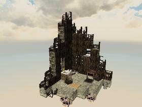

houseburnt_deco1

XML
| CopyAirBlocks | False |
|---|
| AllowTopSoilDecorations | False |
|---|
| Zoning | BiomeOnly |
|---|
| ExcludeDistantPOIMesh | False |
|---|
| TraderArea | False |
|---|
| DistantPOIYOffset | 0 |
|---|
| EditorGroups | world/deco/biome |
|---|
| DifficultyTier | 1 |
|---|
| ExcludePOICulling | False |
|---|
Blocks
- air (Air)
- concreteBlock (Concrete Block)
- cinderBlocks02 (Cinder Blocks02)
- burntWoodBlock4 (Burnt Wood Block 4)
- woodBlock (Wood Block)
- burntWoodBlock5 (Burnt Wood Block 5)
- woodPlate (Wood Plate)
- cntCabinetOldSink (Old Sink)
- window02Broken02CTRPlate (Window02 Broken02 Center Plate)
- faucetBrass02 (Brass Faucet)
- window02 (Window 2)
- burntWoodBlock3 (Burnt Wood Block 3)
- cntToilet01 (Toilet)
- shutters1Plate (Shutters1 Plate)
- cntTrash_can01 (Trash Can)
- rScrapIronTable (Iron Table)
- curtain_bottom1Sheet3 (Curtain 1 Bottom)
- curtain_top1Sheet3 (Curtain 1 Top)
- burntWoodBlock6 (Burnt Wood Block 6)
- burntWoodBlock2 (Burnt Wood Block 2)
- window02Broken01CTRPlate (Window02 Broken01 Center Plate)